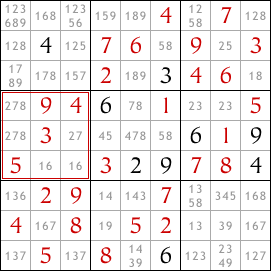
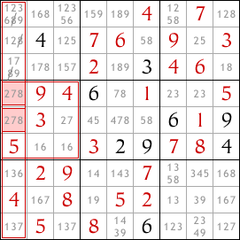
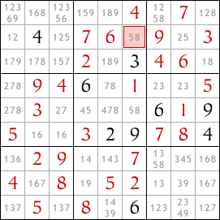
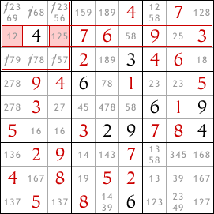
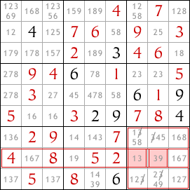

Strictly Sudoku - Hard Sudoku with strategy explained
The Open Singles and Hidden Singles techniques can only get you so far when solving hard puzzles. You'll need to think about various number possibilities for various cells. That's where the next technique comes in. Once you have found all the singles, use this technique to move forward on the puzzle.
Row/Column & Block Interactions
Let's take a look at the following grid.
I've already filled in some of the cells using the open single and hidden single techniques. But now there are no more singles so I need another technique.
I've used the pencil tool to list all the possible values for each cell according to the rules of Sudoku. This will help me find the more complex interactions between the rows, columns and blocks in the sudoku.
Take a look at the second block down on the left side. Which cells in this block can contain the number 8? There's only two such cells, and they're both in the leftmost column of the sudoku. One of these two cells must contain an 8 because there must be exactly one 8 in the block.
But there must also be exactly one 8 in the leftmost column and since both of these cells are in the leftmost column, whichever contains the 8 that will be the 8 in this column. As a result, no other cells in the leftmost column may contain the number 8. So we can remove the 8 from other cells in this column.
This is the basic interaction between blocks and rows or columns.
Having removed the 8 as a possible value in the other cells in the leftmost column, we have revealed a hidden single in the second row down. The highlighted cell must contain an 8.
You can enter the 8 and then continue to complete the sudoku - all you need to complete it are open singles and hidden singles. But I'm going to use the sudoku to illustrate some more interactions between rows or columns and blocks.
The example above shows how a restriction in the possible cells for a value in a block (in this case the 8) can help us remove some possibilities from a column. The same can also happen between a block and a row.
Further, a restriction in a row or column may help us to limit the possibilities in an intersecting block.
Look at the second row down in the sudoku. The only two cells in this row that may contain the number 1 are both in the top left block. Since one of these two cells must contain a 1, no other cells in the block may contain a 1. So we can eliminate 1 as a possibility in all other cells in this block.
Another quick example - look at the eighth row down. Only two cells in this row can contain the number 3, and both of these are in the bottom-right block of cells. So we can eliminate 3 as a possibility from other cells in this block.
Row/column and block interactions don't always lead straight to an open or hidden single - the last two examples don't. But if the interactions enable us to restrict further the possible values for cells they might still help towards solving the sudoku.